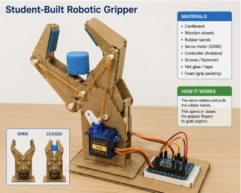

Explore hands-on robotics activities that teach students about manipulation, sensing, haptics, and human interaction.
Students test robotic hand precision by picking up, holding, and moving marbles.
Students explore grip control and object placement.
Students investigate fine motor control and precision grasping by stacking blocks.
Students test controlled movement and interaction with small objects.

Students test the weights between objects.
Students test if sound affects how a surface feels.
Students will test whether a computer can create a feeling of resistance without pushing on you.
Students will test whether heat can be applied and felt.
Students will test whether one object can feel like two.
Students will test if the brain can believe a fake arm is a real arm.